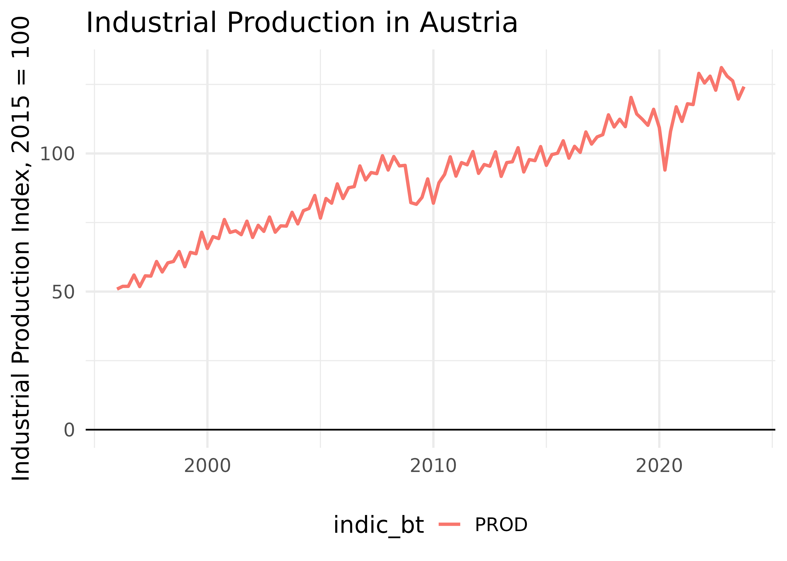
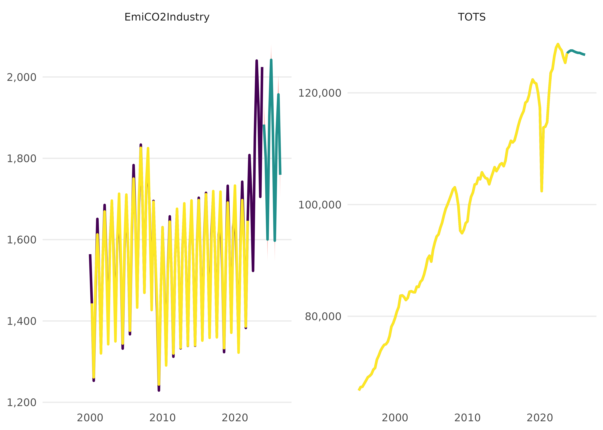

Adding a new variable to the Dictionary
new_variable_to_dict.RmdThis is a vignette to describe the process to add a new variable to the Dictionary of the package. This is necessary if we want to use a new variable in the Aggregate Model. Here we initially discuss three cases: 1) the case of adding a Eurostat variable and 2) adding a new variable from the EDGAR emission dataset and lastly 3) to simply create a new identity based on existing variables.
tl,dr
This is an example how you add a new variable to the Dictionary:
# Add a new row to 'dict', which is an element of the aggregate.model package
dict %>%
bind_rows(tibble(
model_varname = "IndProd", # this is free to choose but must be unique
full_name = "An index of Industrial Production",
database = "eurostat",
variable_code = "PROD", # in this case use the bt_indicator information here
dataset_id = "sts_inpr_q",
var_col = "indic_bt", # here we specify what the column with the variables is called
freq = "q", # for quarterly data, 'm' would be monthly
geo = "AT",
unit = "I15", # for index of 2015 = 100
s_adj = "NSA", # not seasonally adjusted
nace_r2 = "B-D")) -> new_dict
# now use the new_dict in run_modelSome general remarks about the Dictionary
The dictionary is the central store of information that is being used for us to “translate” difficult data codes into useful variable names - and it is also central for us to tell the Aggregate Model what to download.
Let’s take a look at the dictionary:
dict %>% as_tibble %>% slice(1:10)
#> # A tibble: 10 × 14
#> model_varname full_name database variable_code dataset_id var_col freq geo
#> <chr> <chr> <chr> <chr> <chr> <chr> <chr> <chr>
#> 1 TOTS Total Su… NA TOTS NA NA NA NA
#> 2 GDP Gross do… eurostat B1GQ namq_10_g… na_item q AT
#> 3 GValueAdd Value ad… eurostat B1G namq_10_a… na_item q AT
#> 4 Export Exports … eurostat P6 namq_10_g… na_item q AT
#> 5 Import Imports … eurostat P7 namq_10_g… na_item q AT
#> 6 GCapitalForm Gross ca… eurostat P5G namq_10_g… na_item q AT
#> 7 FinConsExp Final co… eurostat P3 namq_10_g… na_item q AT
#> 8 FinConsExpGov Final co… eurostat P3_S13 namq_10_g… na_item q AT
#> 9 FinConsExpHH Househol… eurostat P31_S14_S15 namq_10_g… na_item q AT
#> 10 StatDiscrep Statisti… eurostat YA0 namq_10_g… na_item q AT
#> # ℹ 6 more variables: unit <chr>, s_adj <chr>, nace_r2 <chr>,
#> # ipcc_sector <chr>, cpa2_1 <chr>, siec <lgl>A few words about the variables/columns in the dictionary: There are a few crucial columns that will nearly always be needed/useful. These are:
model_varname: Variable name in the model equations, must be unique.
full_name: Full name/description of the variable.
Currently full in use are also the columns:
database: Name of the database. Internally implemented are “eurostat” and “edgar.”
variable_code: Identifier of the variable if applicable, e.g., Eurostat variable code.
dataset_id: Identifier of the dataset where the variable is available, e.g., Eurostat dataset code or link to file on the web.
More varied is the use of:
var_col: Name of variable/column in the dataset.
freq: Frequency of the variable in the dataset. “m” for monthly, “q” for quarterly.
geo: ISO 3166-1 alpha-2 country code.
unit: Eurostat unit in which the variable is measured, e.g., to choose between different measurements for the same variable.
s_adj: Eurostat seasonal adjustment or not.
nace_r2: Eurostat identifier for NACE Rev. 2 classification.
ipcc_sector: EDGAR IPCC National Greenhouse Gas Inventories, see link. “TOTAL” is not an official IPCC code but is internally interpreted to use country totals.
cpa2_1: Eurostat identifier for Classification of Products by Activity (CPA).
siec: Standard International Energy Product Classification, e.g., for Eurostat.
Adding a variable from Eurostat
Firstly, head over to Eurostat to find out more about the variable you would like to add. There are a few data viewer options in Eurostat, but we recommend using the “Data Explorer” for this. Here is a good link to get started:
Eurostat Data Viewer Data Navigation Tree

Identifying the correct information needed
Now let’s assume that we want to add some form of Industrial
Production to the dataset (Link).
So we head back to the data tree and select the quarterly dataset for
Industrial Production (sts_inpr_q):

Now let’s take a closer look at the data features that are typically at the top of the screen:

This already gives us something crucial: the dataset identifier, in
this case sts_inpr_q. This corresponds to the column
dataset_id in the Dictionary dict.
To find out even more about all the detailed features of the dataset,
we click on the big encircled + that are e.g. next to
“Time” or “Unit of Measure”. This gives us the ability to play around a
bit more and define a custom dataset for our specific needs:

This really is the window that we will need to focus on quite a bit.
First of all, we note that the different dimensions of the data are
encapsulated in square brackets [ ], like
time, indicator_bt, or s_adj,
here the most relevant marked in yellow:

To identify the correct data, we now need to click through the different dimensions and make note of what it is that we want to use.
While the available types will vary depending on Eurostat data, most variables relevant for the Aggregate Model will include:
Some variable that indicates the specific variable name, like
na_itemorindic_bt, depending on the Eurostat guidelines associated with the data collection method used.timegeo: the geography that the data belongs to (see Glossary:Country codes - Statistics Explained (europa.eu) for more information on the format).unit: the unit of the variable like €, tonnes, %, etc. (frequently also some kind of indices likeI15forIndex = 2015). This corresponds to the unit column in the Dictionary dict.s_adj: Seasonal Adjustment, e.g. NSA refers to “No Seasonal Adjustment”-
Sometimes the data we consider can be broken down even further, e.g. according to sectors or physical quantities (like different greenhouse gases). These include for example things like:
nace_r2: A column and indicator that indicates the sector according to the Statistical classification of economic activities in the European Community (NACE Revision 2)cp2_1: A column and indicator that indicates the Statistical classification of products by activity, 2.1 (CPA 2.1)siec: Standard International Energy Product Classification
Based on all the information above, let’s say that we want to add a
variable from the dataset sts_inpr_q:
industrial production,
that spans all NACE rev. 2 sectors in the sectors B to D,
for Austria,
using the unit of an index that is set to the 2015 value and
is not seasonally adjusted.
Checking the new variable
Given this information, let’s try to download it first - using the
get_eurostat function from the {eurostat}
package:
dat_raw <- get_eurostat(id = "sts_inpr_q")
dat_raw
#> # A tibble: 3,452,724 × 8
#> freq indic_bt nace_r2 s_adj unit geo TIME_PERIOD values
#> <chr> <chr> <chr> <chr> <chr> <chr> <date> <dbl>
#> 1 Q PROD B CA I10 AT 1996-01-01 64.2
#> 2 Q PROD B CA I10 AT 1996-04-01 85.6
#> 3 Q PROD B CA I10 AT 1996-07-01 90.1
#> 4 Q PROD B CA I10 AT 1996-10-01 87.1
#> 5 Q PROD B CA I10 AT 1997-01-01 66.6
#> 6 Q PROD B CA I10 AT 1997-04-01 82.1
#> 7 Q PROD B CA I10 AT 1997-07-01 85.9
#> 8 Q PROD B CA I10 AT 1997-10-01 82.2
#> 9 Q PROD B CA I10 AT 1998-01-01 69.2
#> 10 Q PROD B CA I10 AT 1998-04-01 91.1
#> # ℹ 3,452,714 more rowsNow let’s filter this raw dataset down to the data series that we need:
dat_raw %>%
filter(indic_bt == "PROD", # for industrial production variable
nace_r2 == "B-D", # to select all NACE rev 2 sectors in B, C, and D
s_adj == "NSA", # to get the raw, non-adjusted data
unit == "I15", # to get the 2015 Index
geo == "AT" # to get only the Austrian data
) -> dat_AT
dat_AT
#> # A tibble: 111 × 8
#> freq indic_bt nace_r2 s_adj unit geo TIME_PERIOD values
#> <chr> <chr> <chr> <chr> <chr> <chr> <date> <dbl>
#> 1 Q PROD B-D NSA I15 AT 1996-01-01 50.9
#> 2 Q PROD B-D NSA I15 AT 1996-04-01 51.9
#> 3 Q PROD B-D NSA I15 AT 1996-07-01 51.9
#> 4 Q PROD B-D NSA I15 AT 1996-10-01 56
#> 5 Q PROD B-D NSA I15 AT 1997-01-01 51.8
#> 6 Q PROD B-D NSA I15 AT 1997-04-01 55.7
#> 7 Q PROD B-D NSA I15 AT 1997-07-01 55.6
#> 8 Q PROD B-D NSA I15 AT 1997-10-01 60.9
#> 9 Q PROD B-D NSA I15 AT 1998-01-01 57.1
#> 10 Q PROD B-D NSA I15 AT 1998-04-01 60.4
#> # ℹ 101 more rowsThis looks quite good. We can plot this really quickly:
ggplot(dat_AT, aes(x = TIME_PERIOD, y = values, color = indic_bt)) +
geom_line(linewidth = 1) +
# add some styling
geom_hline(aes(yintercept = 0)) + # to get a line through 0
labs(title = "Industrial Production in Austria", x = NULL, y = "Industrial Production Index, 2015 = 100") +
theme_minimal(base_size = 15)+
theme(legend.position = "bottom")
Adding the variable to the dictionary
Now that we know what the data looks like and have verified that this is what we want to add, we can add this to the dictionary. For this, we consider the column names of the dictionary again.
dict %>% names
#> [1] "model_varname" "full_name" "database" "variable_code"
#> [5] "dataset_id" "var_col" "freq" "geo"
#> [9] "unit" "s_adj" "nace_r2" "ipcc_sector"
#> [13] "cpa2_1" "siec"And of course checking the documentation of dict again:
?dictEssentially, we need to add our new variable to our dictionary by
simply adding it as a new row. We can e.g. do this with
rbind() or bind_rows(). Depending on the
variable that we consider, we will need to fill out as many columns as
possible. For our example this means:
dict %>%
bind_rows(tibble(
model_varname = "IndProd", # this is free to choose but must be unique
full_name = "An index of Industrial Production",
database = "eurostat",
variable_code = "PROD", # in this case use the bt_indicator information here
dataset_id = "sts_inpr_q",
var_col = "indic_bt", # here we specify what the column with the variables is called
freq = "q", # for quarterly data, 'm' would be monthly
geo = "AT",
unit = "I15", # for index of 2015 = 100
s_adj = "NSA", # not seasonally adjusted
nace_r2 = "B-D")) -> new_dictNow we are done and have successfully created a new dictionary!!
new_dict %>%
as_tibble() %>%
tail
#> # A tibble: 6 × 14
#> model_varname full_name database variable_code dataset_id var_col freq geo
#> <chr> <chr> <chr> <chr> <chr> <chr> <chr> <chr>
#> 1 CDD Cooling … eurostat CDD nrg_chdd_m indic_… m AT
#> 2 EmiCH4Livesto… Methane … edgar NA https://j… NA m AT
#> 3 EmiCO2Industry Carbon E… edgar NA https://j… NA m AT
#> 4 EmiCO2Combust… Carbon E… edgar NA https://j… NA m AT
#> 5 EmiN2OTotal Nitrous … edgar NA https://j… NA m AT
#> 6 IndProd An index… eurostat PROD sts_inpr_q indic_… q AT
#> # ℹ 6 more variables: unit <chr>, s_adj <chr>, nace_r2 <chr>,
#> # ipcc_sector <chr>, cpa2_1 <chr>, siec <lgl>Quickly run a small model to check if it works:
We can now put this to the test in an extremely small model. We construct a model of the CO[2] Emissions in Industry as a function of Gas and Electricity Prices as well as our new measure for Industrial Production:
\[ EmiCO2Industry = HICP_{Gas} + HICP_{Electricity} + IndProd \]
We put this into our specification table alongside a simple identity that we need for the moment because the current set-up does not allow not adding any identities.
specification <- dplyr::tibble(
type = c(
"n",
"d"
),
dependent = c(
"EmiCO2Industry",
"TOTS"
),
independent = c(
"HICP_Gas + HICP_Electricity + IndProd",
"GDP + Import"
)
)
specification
#> # A tibble: 2 × 3
#> type dependent independent
#> <chr> <chr> <chr>
#> 1 n EmiCO2Industry HICP_Gas + HICP_Electricity + IndProd
#> 2 d TOTS GDP + ImportWith that specification set up, we now run the model using the
new_dict that we constructed earlier.
model <- run_model(specification = specification,
dictionary = new_dict,
present = FALSE,
quiet = TRUE,
constrain.to.minimum.sample = FALSE)Let’s visualise this model alongisde its forecast:
mod_fcast <- forecast_model(model, plot.forecast = FALSE)
#> No exogenous values provided. Model will forecast the exogenous values with an AR4 process (incl. Q dummies, IIS and SIS w 't.pval = 0.001').
#> Alternative is exog_fill_method = 'last'.
plot(mod_fcast)